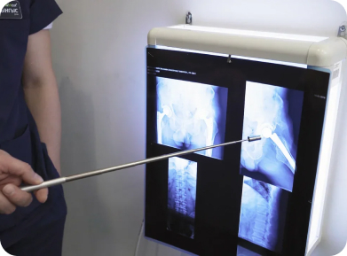

Медицинский фитнес (кинезиотерапия) - это эффективный метод реабилитации, основанный на движениях мышц и суставов. Понятие «кинезотерапия» (также известное как «кинезитерапия», «кинезиотерапия») происходит от слов «кинезис», что означает движение, и «терапия» - лечение, то есть, «лечение движением».
Кинезотерапия используется при большинстве заболеваниях и начинается сразу же после стабилизации состояния пациента. Ее приписывают для восстановления или рекуперации двигательной функции, уменьшение риска возникновения осложнений (тромбоэмболии, заболеваний дыхательных путей, пролежней, контрактур и т.д.) и сохранении общей физической способности пациента.
МЕТОДИКА ДОКТОРА ЛАБУНЦА

Суть кинезотерапии
Преимущественно, после болезни, операции или травмы мышцы человека ослабевают, уменьшается подвижность суставов, нарушаются естественные движения, что приводит к ухудшению общего состояния. А любое физическое упражнение заставляет реагировать не только опорно-двигательный аппарат, а все системы организма: нервную, гормональную, иммунную, что значительно ускоряет процесс выздоровления.
В основе кинезотерапии положены результаты научных и клинических исследований работы мышечной системы человека и ее влияния на опорно-двигательный аппарат человека.
Лечение движениями предусматривает адаптированые и нарастающие силовые действия, что постепенно усложняются и индивидуально подобранные для пациента, с учетом его анамнеза и физиологических особенностей. В результате повторяющегося, последовательного и нарастающего обучение движения закрепляются на нейрорефлекторном уровне, что восстанавливает трофику и обмен веществ в костно-мышечной системы человека. Лечение осуществляется с помощью специального оборудования: мячей, эспандеров, лечебно-реабилитационных тренажеров, гантель и т.п., а также только с помощью, например, партерной гимнастики.
Важным условием прохождения кинезотерапевтичного курса является правильное дыхание, в противном случае выполняемые движения не дадут желаемого эффекта.